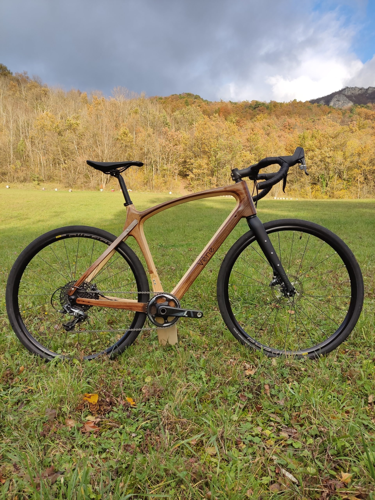
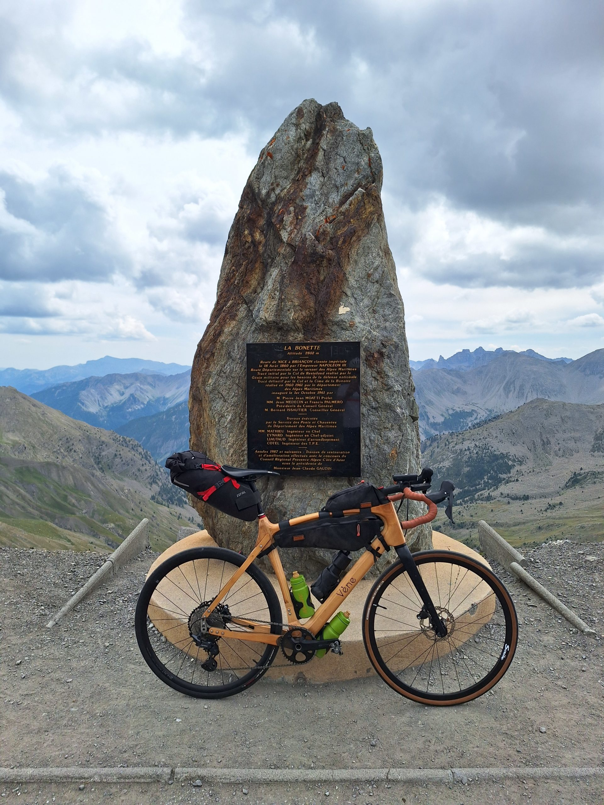

Élégance, technologie et respect de l’environnement.
Basée dans la Drôme, Cycles Vène propose des vélos en bois du Vercors, conçus avec des matériaux nobles, durables et 100% français. Une alternative naturelle pour le gravel ou le cyclotourisme longue distance.
Un vélo conçu pour vous emmener sur toutes les routes, qu’elles soient d’asphalte, forestières ou de graviers. Ce gravel polyvalent se montrera aussi agile pour vos sorties rapides à la journée que lors de vos excursions en bikepacking sur plusieurs jours. Le cadre bois filtre naturellement les vibrations. Il est aussi adapté en draisiennes pour enfants de 18 mois à 4 ans.
Le modèle Gravel Véne a été validé selon la norme internationale ISO-4210. Cela garantit la qualité et la durabilité de son cadre, avec une garantie de 5 ans.
Les vélos sont conçus à partir de matériaux recyclés, montés localement et pensés pour durer. Une vraie alternative éco-consciente au vélo traditionnel.
En plein test de leur nouveau design, endurance est là pour avaler des kilomètres utilisés pour apporter le maximum de confort vertical, ce vélo de route vous mettra tous d'accord.